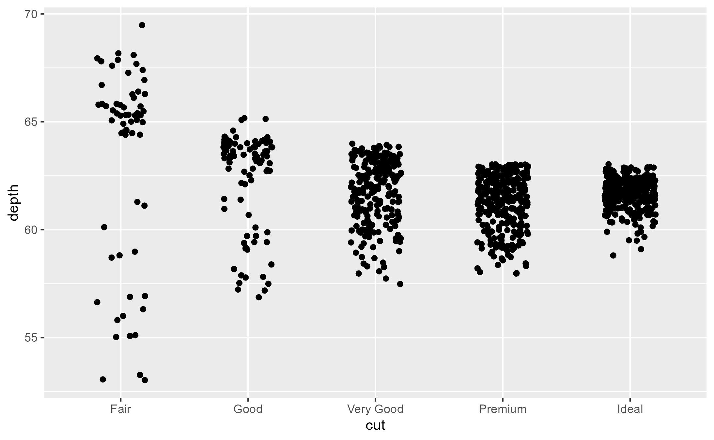

Insert traces for delayed evaluation
Usage
ggtrace(
method,
trace_steps,
trace_exprs,
once = TRUE,
use_names = TRUE,
...,
print_output = TRUE,
verbose = FALSE
)Arguments
- method
A function or a ggproto method. The ggproto method may be specified using any of the following forms:
ggproto$methodnamespace::ggproto$methodnamespace:::ggproto$method
- trace_steps
A sorted numeric vector of positions in the method's body to trace. Negative indices reference steps from the last, where
-1references the last step in the body. Special value"all"traces all steps of the method body.- trace_exprs
A list of expressions to evaluate at each position specified in
trace_steps. If a single expression is provided, it is recycled to match the length oftrace_steps.To simply run a step and return its output, you can use the
~stepkeyword. If the step is an assign expression, the value of the assigned variable is returned. Iftrace_exprsis not provided,ggtrace()is called with~stepby default.- once
Whether to
untrace()the method on exit. IfFALSE, creates a persistent trace which is active untilgguntrace()is called on the method. Defaults toTRUE.- use_names
Whether the trace dump should use the names from
trace_exprs. Iftrace_exprsis not specified, whether to use the method steps as names. Defaults toTRUE.- ...
Unused, for extensibility.
- print_output
Whether to
print()the output of each expression to the console. Defaults toTRUE.- verbose
Whether logs should be printed when trace is triggered. Encompasses
print_output, meaning thatverbose = FALSEalso triggers the effect ofprint_output = FALSEby consequence. Defaults toFALSE.
Details
ggtrace() is a wrapper around base::trace() which is called on the ggproto method.
It calls base::untrace() on itself on exit by default, to make its effect ephemeral like base::debugonce().
A major feature is the ability to pass multiple positions and expressions to trace_steps and trace_exprs to
inspect, capture, and modify the run time environment of ggproto methods. It is recommended to consult the output
of ggbody() when deciding which expressions to evaluate at which steps.
The output of the expressions passed to trace_exprs is printed while tracing takes place. The
list of outputs from ggtrace() ("trace dumps") can be returned for further inspection with
last_ggtrace() or global_ggtrace().
Workflows
Broadly, there are four flavors of working with the {ggtrace} package, listed in the order of increasing complexity:
Inspect: The canonical use of
ggtrace()to make queries, where expressions are passed in and their evaluated output are returned, potentially for further inspection.Capture: The strategy of returning the method's runtime environment for more complex explorations outside of the debugging context. A method's environment contextualizes the
selfobject in addition to making all inherited params and local variables available.A reference to the method's runtime environment can be returned with
environment(), as intrace_exprs = quote(environment()). Note that environments are mutable, meaning thatenvironment()returned from the first and last steps will reference the same environment. To get a snapshot of the environment at a particular step, you can return a deep copy withrlang::env_clone(environment()).Inject: The strategy of modifying the behavior of a method as it runs by passing in expressions that make assignments.
For example,
trace_steps = c(1, 10)withtrace_exprs = rlang::exprs(a <- 5, a)will first assign a new variableaat step 1, and return its value5at step 10. This can also be used to modify important variables likequote(data$x <- data$x * 10). If you would like to inject an object from the global environment, you can make use of the!!(bang-bang) operator from{rlang}, like so:rlang::expr(data <- !!modified_data).Note that the execution environment is created anew each time the method is ran, so modifying the environment from its previous execution will not affect future calls to the method.
If you would like to capture the modified plot output and assign it to a variable, you can do so with
ggplotGrob(). You can then render the modified plot withprint().Edit: It is also possible to make any arbitrary modifications to the method's source code, which stays in effect until the method is untraced. While this is also handled with
base::trace(), this workflow is fundamentally interactive. Therefore, it has been refactored as its own functionggedit(). See?ggeditfor more details.
Gotchas
If you wrap a ggplot in
invisible()to silenceggtrace(), the plot will not build, which also means that the tracing is not triggered. This is because the print/plot method of ggplot is what triggers the evaluation of the plot code. It is recommended to allowggtrace()to print information, but if you'd really like to silence it, you can do so by wrapping the plot in a function that forces its evaluation first, likeggplotGrob, as ininvisible(ggplotGrob(<plot>)).If for any reason
ggtrace(once = TRUE)fails to untrace itself on exit, you may accidentally trigger the trace again. To check if a method is being traced, callis_traced(). You can also always callgguntrace()since unlikebase::untrace(), it will not error if a trace doesn't exist on the method. Instead,gguntrace()will do nothing in that case and simply inform you that there is no trace to remove.Because
base::trace()wraps the method body in a special environment, it is not possible to inspect the method/function which called it, even with something likerlang::caller_env(). You will traverse through a few wrapping environments created bybase::trace()which eventually ends up looping around.
Messages
Various information is sent to the console whenever a trace is triggered. You can control what gets displayed with print_output and
verbose, which are both TRUE by default. print_output simply calls print() on the evaluated expressions, and turning this
off may be desirable if expressions in trace_exprs evaluates to a long dataframe or vector. verbose controls all
information printed to the console including those by print(), and setting verbose = FALSE will mean that only
message()s will be displayed. Lastly, you can suppress message() from ggtrace() with options(ggtrace.suppressMessages = TRUE),
though suppressing messages is generally not recommended.
Examples
# One example of an Inspect workflow ----
library(ggplot2)
jitter_plot <- ggplot(diamonds[1:1000,], aes(cut, depth)) +
geom_point(position = position_jitter(width = 0.2, seed = 2021))
jitter_plot

ggbody(Position$compute_layer)
#> [[1]]
#> `{`
#>
#> [[2]]
#> dapply(data, "PANEL", function(data) {
#> if (empty(data))
#> return(data_frame0())
#> scales <- layout$get_scales(data$PANEL[1])
#> self$compute_panel(data = data, params = params, scales = scales)
#> })
#>
## Step 1 ====
## Inspect what `data` look like at the start of the function
ggtrace(Position$compute_layer, trace_steps = 1, trace_exprs = quote(head(data)))
#> `Position$compute_layer` now being traced.
jitter_plot
#> Triggering trace on `Position$compute_layer`
#> Untracing `Position$compute_layer` on exit.
ggtrace::last_ggtrace()
#> [[1]]
#> x y PANEL group
#> 1 5 61.5 1 5
#> 2 4 59.8 1 4
#> 3 2 56.9 1 2
#> 4 4 62.4 1 4
#> 5 2 63.3 1 2
#> 6 3 62.8 1 3
#>
## Step 2 ====
## What does `data` look like at the end of the method? Unfortunately, `trace()` only lets us enter
## at the beginning of a step, so we can't inspect what happens after the last step is evaluated. To
## address this, `ggtrace()` offers a `~step` keyword which gets substituted for the current line.
## We also set `print_output = FALSE` to disable printing of the output
ggtrace(
Position$compute_layer,
trace_steps = -1, # Last step
trace_exprs = quote(~step), # This is the default if `trace_exprs` is not provided
print_output = FALSE
)
#> `Position$compute_layer` now being traced.
# We wrap the plot in `ggplotGrob()` and `invisible()` to force
# its evaluation while suppressing its rendering
invisible(ggplotGrob(jitter_plot))
#> Triggering trace on `Position$compute_layer`
#> Untracing `Position$compute_layer` on exit.
# The output of the evaluated expressions can be inspected with `last_ggtrace()`
head(last_ggtrace()[[1]])
#> x y PANEL group
#> 1 4.980507 61.50684 1 5
#> 2 4.113512 59.77872 1 4
#> 3 2.083873 56.86655 1 2
#> 4 3.952698 62.42703 1 4
#> 5 2.054530 63.29763 1 2
#> 6 3.080538 62.77536 1 3
## Step 3 ====
## If we want both to be returned at the same time for an easier comparison, we can pass in a
## (named) list of expressions.
ggtrace(
Position$compute_layer,
trace_steps = c(1, -1),
trace_exprs = rlang::exprs(
before_jitter = data,
after_jitter = ~step
),
verbose = FALSE
)
#> `Position$compute_layer` now being traced.
invisible(ggplotGrob(jitter_plot))
#> Triggering trace on `Position$compute_layer`
#> Untracing `Position$compute_layer` on exit.
## Step 4 ====
## The output of the evaluated expressions can be inspected with `last_ggtrace()`
jitter_tracedump <- last_ggtrace()
lapply(jitter_tracedump, head, 3)
#> $before_jitter
#> x y PANEL group
#> 1 5 61.5 1 5
#> 2 4 59.8 1 4
#> 3 2 56.9 1 2
#>
#> $after_jitter
#> x y PANEL group
#> 1 4.980507 61.50684 1 5
#> 2 4.113512 59.77872 1 4
#> 3 2.083873 56.86655 1 2
#>